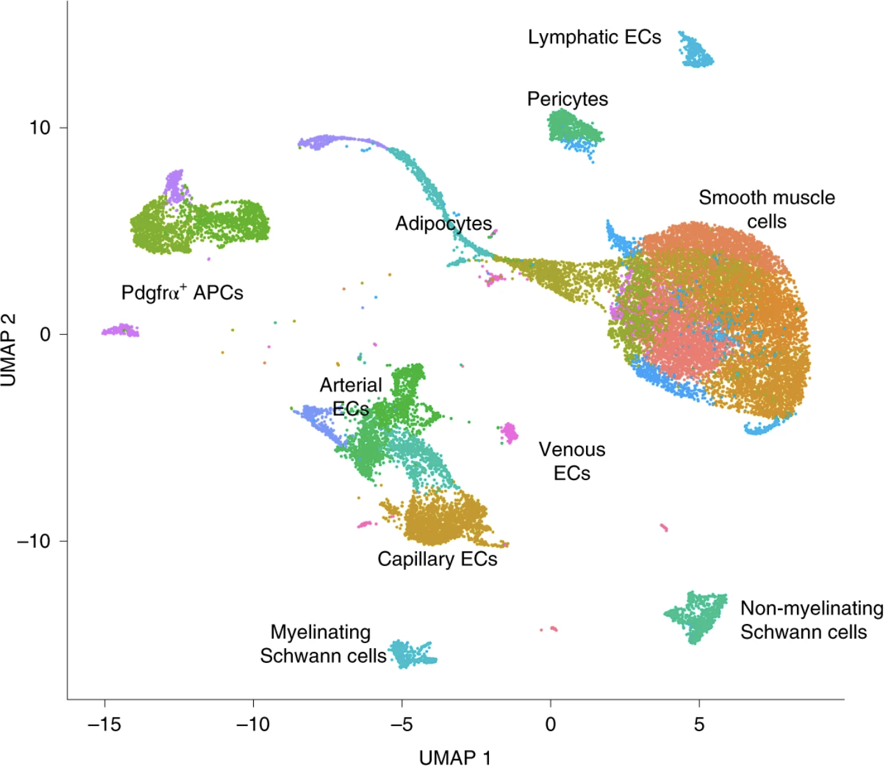
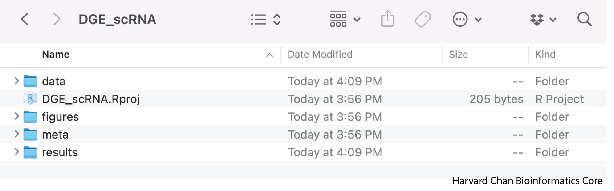
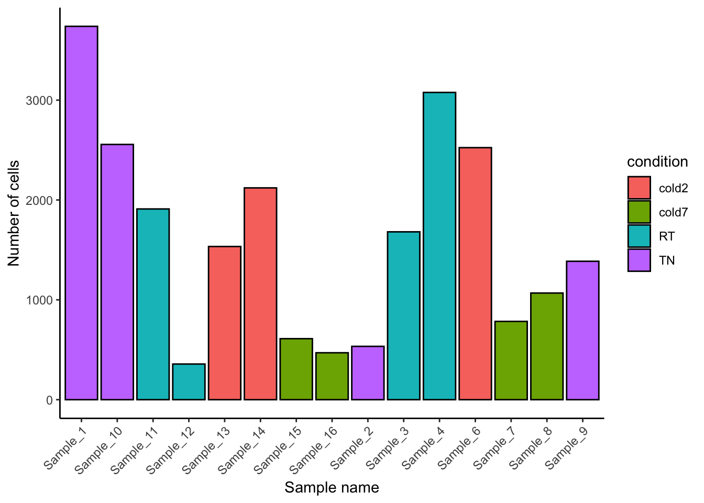
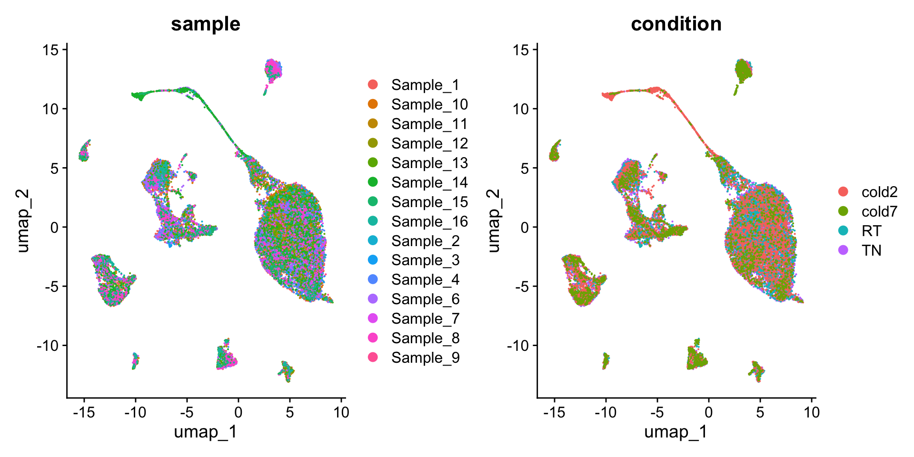
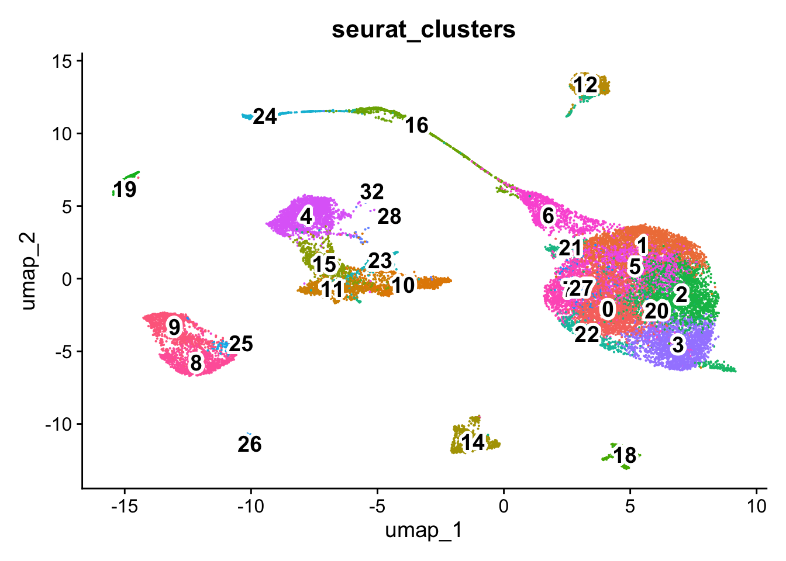
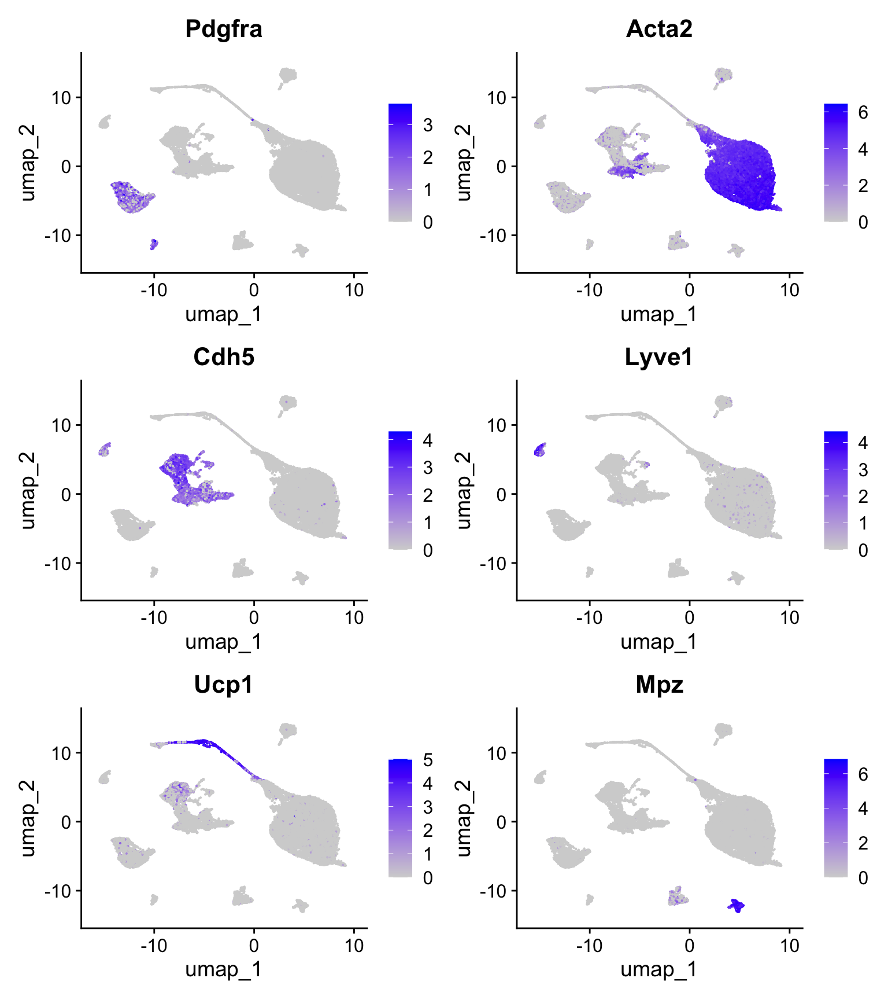
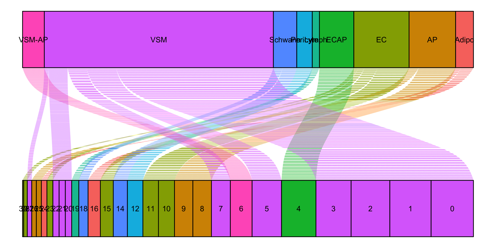
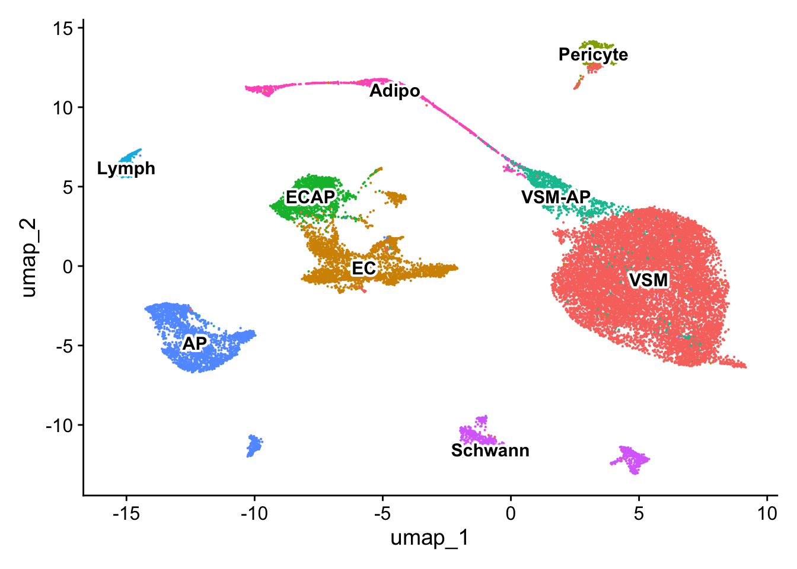
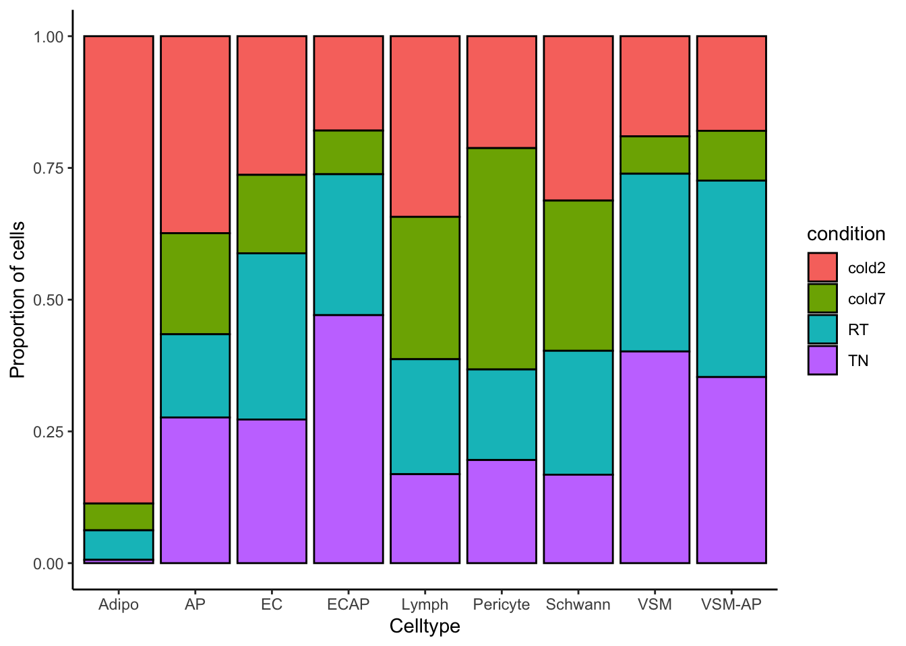

# September 2024
# HBC Pseduobulk workshop
# Single-cell RNA-seq analysis - metadataProject Setup and Data Exploration
Learning Objectives
- Introduce the dataset and begin setup by loading data
- Describe the process of going from count matrix to annotated clusters
- Explore distribution of cluster annotations
Introduction to the dataset
For this workshop, we will be using the single-cell RNA-seq dataset from Shamsi et al (2021). The primary focus of this study was to evaluate the changes in brown adipose tissue (BAT) at different temperatures.
Cells were isolated from stromal vascular fraction of brown adipose tissue. After removal of all hematopoietic lineage-positive cells, 24,498 non-hematopoietic cells were re-clustered and visualisation of the clusters using UMAP identified eight major non-immune cell types present in BAT. This unsupervised clustering of gene expression profiles also revealed heterogeneity within each cell type, illustrated by the presence of multiple distinct clusters for each cell type.

The mice used in this study were housed in 4 different temperature conditions: - TN: 30 °C for 1 week - RT: 22 °C - cold2: 5 °C for 2 days - cold7: 5 °C for 7 days
There are four replicates per condition, except cold2 which has 3 replicates. This experimental design allowed for adequate comparison of gene expression for each celltype between conditions. For this workshop, we will be using this clustered data set as a starting point to demonstrate various approaches for identifying differentially expressed genes in single cell RNA-seq data.
Raw data
The processed dataset is available on GEO (GSE160585) and the raw data is available for download on SRA. We chose to download the filtered counts data and metadata files, and use those to create a Seurat object as our starting point. For more detailed information and code on how to create the object from the GEO files, please see this lesson.
Relevant metadata
In addition to the counts matrix, we also need to collect information about the data; this is known as metadata. There is often a temptation to just start exploring the data, but it is not very meaningful if we know nothing about the samples that this data originated from.
Some relevant metadata for our dataset is provided below:
- Data were generated with the 10x chromium Single Cell 3′ version 3 reagent kit
- Sequenced on the NovaSeq S2 flow cell (Illumina, 100 cycles)
- Processed with Cell Ranger 3.0.1
Set up
For this workshop, we will be working within an RStudio project. In order to follow along you should have downloaded the R project.
Tip
If you haven’t done this already, the project can be accessed using this link.
Once downloaded, you should see a file called Pseudobulk_workshop.zip on your computer (likely, in your Downloads folder).
- Unzip this file. It will result in a folder of the same name.
- Move the folder to the location on your computer where you would like to perform the analysis.
- Open up the folder. The contents will look like the screenshot below.
- Locate the
.Rproj fileand double-click on it. This will open up RStudio with the “Pseudobulk_workshop” project loaded.

Project organization
One of the most important parts of research that involves large amounts of data is how best to manage it. We tend to prioritize the analysis, but there are many other important aspects of data management that are often overlooked in the excitement to get a first look at new data. The HMS Data Management Working Group discusses in-depth some things to consider beyond the data creation and analysis.
For each experiment you work on and analyze data for, it is considered best practice to get organized by creating a planned storage space (directory structure). We will do that for our single-cell analysis.
Look inside your project space and you will find that a directory structure has been set up for you:
Pseudobulk_workshop/
├── data
├── meta
├── results
└── figures
NOTE FOR WINDOWS OS users
When you open the project folder after unzipping, please check if you have a data folder with a subfolder also called data. If this is the case, please move all the files from the subfolder into the parent data folder.
Loading single-cell RNA-seq count data
Next, let’s open a new Rscript file, and start with some comments to indicate what this file is going to contain:
Save the Rscript as metadata.R. Your working directory should look something like this:
A GIF demonstrating this step is shown below:

Loading libraries
Next, we can load the necessary libraries:
# Load libraries
library(Seurat)
library(tidyverse)
library(ggalluvial)Load Seurat object
We generated this Seurat object using the files that were deposited to GEO. More details on how this Seurat object was generated are detailed in another lesson, where we provide more clarity on what parameters were used for normalization, integration, and clustering.
Let’s begin by looking at what metadata is stored inside the Seurat object, paying close attention to sample identities and celltype annotations.
# Load Seurat object
seurat <- readRDS("../data/BAT_GSE160585_final.rds")
colnames(seurat@meta.data) [1] "orig.ident" "nCount_RNA" "nFeature_RNA"
[4] "sample" "log10GenesPerUMI" "mitoRatio"
[7] "condition" "S.Score" "G2M.Score"
[10] "Phase" "CC.Difference" "nCount_SCT"
[13] "nFeature_SCT" "integrated_snn_res.1.2" "celltype"
[16] "seurat_clusters" A nice way to observe patterns or trends in the data is to visualize it, especially when we are working with such a large number of cells!
Sample distribution
Recall from the summary above that we have cells from four different conditions. We can use a barplot to show the number of cells for each replicate, coloring each sample by the temperature condition the mice were subjected to. This provides an overview of the number of cells we are working with for each replicate. This metric is important to bear in mind as we need to ensure that we have enough cells to run future analyses.
# Number of cells per sample
ggplot(seurat@meta.data) +
geom_bar(aes(x=sample, fill=condition),
stat="count", color="black") +
theme_classic() +
theme(axis.text.x = element_text(angle=45, vjust=1, hjust=1)) +
labs(x="Sample name", y="Number of cells")
We can also see the distribution of cells across the UMAP for each replicate and sample. As this dataset has already been processed and integrated, we expect the cells to be integrated together - where there are no cells grouping together due to a batch effect (i.e sample). Instead the cells should be clustered together based upon gene expression similarity, which would ideally lead to celltypes being grouped together.
# UMAPs of condition and sample
DimPlot(seurat, group.by=c("sample", "condition"))
Celltype annotation
Intially, cells were clustered at a range of resolutions. The authors chose a resolution 1.2 as it grouped cells adequately into the celltypes of interest.
# UMAP clusters
p <- DimPlot(seurat, group.by="seurat_clusters") + NoLegend()
LabelClusters(p, id = "seurat_clusters", fontface = "bold",
size = 5, bg.colour = "white", bg.r = .2, force = 0)
Using these clusters and a variety of marker genes, the cells were annotated into 8 major non-immune cell types:
- Pdgfra+ adipose progenitors (AP)
- Vascular endothelial (ECAP, EC)
- Lymphatic endothelial (Lymph)
- Vascular smooth muscle cells (VSM)
- Pericytes (Pericyte)
- Adipocytes (Adipo)
- Myelinating Schwann cells (Schwann)
- Non-myelinating Schwann cells (Schwann)
Notable marker genes from the paper are represented here using the FeaturePlot() function. Here we can see that indeed the cells are grouping together based upon gene expression and celltype identities.
FeaturePlot(seurat, c("Pdgfra", "Acta2", "Cdh5",
"Lyve1", "Ucp1", "Mpz"))
The mapping of cluster to celltypes is being represented here as an alluvial plot. This visualization provides a quick way to see which clusters have been annotated as which celltype.
# Order clusters numerically
order_cluster <- unique(seurat$seurat_clusters) %>% as.numeric() %>% sort() %>% as.character()
seurat$seurat_clusters <- factor(seurat$seurat_clusters, levels=order_cluster)
# Map clusters to celltypes
ggplot(seurat@meta.data,
aes(axis1 = seurat_clusters,
axis2 = celltype,
fill = celltype)) +
geom_alluvium() +
geom_stratum() +
geom_text(stat = "stratum",
aes(label=after_stat(stratum))) +
theme_void() +
NoLegend() +
coord_flip()
With these updated celltype labels, we can see how they distribute on the UMAP.
# UMAP celltype
Idents(seurat) <- "celltype"
p <- DimPlot(seurat) + NoLegend()
LabelClusters(p, id = "ident", fontface = "bold", size = 4,
bg.colour = "white", bg.r = .2, force = 0)
We can even identify celltypes of interest based upon the proportion of cells in each experimental condition.
# Barplot sample proportion by celltype
ggplot(seurat@meta.data) +
geom_bar(aes(x=celltype, fill=condition),
position=position_fill(), color="black") +
theme_classic() +
labs(x="Celltype", y="Proportion of cells")
Now that we have a better understanding of what data we have available to us, we can begin our analysis!